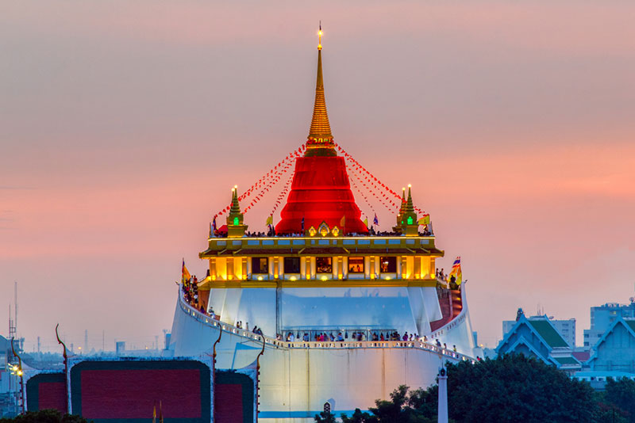
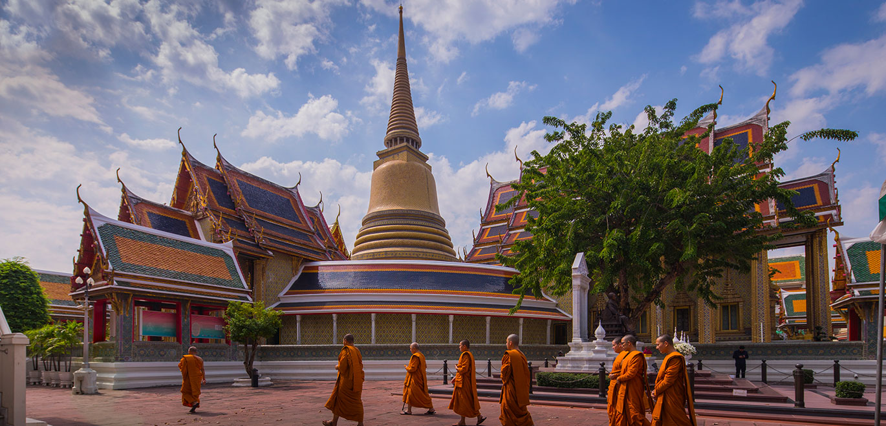

ประวัติกรุงเทพ
 |
ประวัติ วัดอรุณราชวราราม “วัดอรุณราชวราราม” มีชื่อเดิมว่า “วัดมะกอกนอก” แต่ต่อมาสมเด็จพระเจ้าตากสินมหาราชได้เปลี่ยนชื่อจากวัดมะกอกนอกมาเป็น “วัดแจ้ง” เพื่อเป็นอนุสรณ์ว่าพระองค์ได้เสด็จมาถึงที่นี่ในยามแจ้ง ในสมัยกรุงธนบุรี วัดอรุณฯ หรือวัดแจ้งในขณะนั้นถือเป็นวัดประจำวัง เพราะอยู่ในเขตของพระราชวังเดิม |
|  | ประวัติ วัดภูเขาทอง วัดสระเกศ เดิมชื่อ วัดสะแก เป็นวัดโบราณสมัยกรุงศรีอยุธยา จัดเป็นวัดอารามหลวงชั้นโท ชนิดราชวรมหาวิหาร ตั้งอยู่ในเขตป้อมปราบศัตรูพ่าย เป็นวัดสวยแห่งเกาะรัตนโกสินทร์ ที่มีความวิจิตรงดงาม มีพระเจดีย์ สีทองสูงเด่นเป็นสง่าเหลืองอร่ามอยู่ท่ามใจกลางกรุงเทพมหานคร พระบาทสมเด็จพระพุทธยอดฟ้าจุฬาโลกมหาราช รัชกาลที่ 1 ทรงโปรดเกล้าฯ ให้ปฏิสังขรณ์และขุดคลองรอบพระอาราม ทรงพระราชทานนามใหม่วา "วัดสระเกศ" แปลว่า ชำระพระเกศา สืบเนื่องเมื่อทำพิธีพระกระยาสนาน (อาบน้ำ)ครั้งเสด็จกรีธาทัพกลับจากกัมพูชามาปราบจลาจลในกรุงธนบุรีและเสด็จ ขึ้นเถลิงถวัลยราชสมบัติในปี พ.ศ. 2325 อดีตกล่าวกันว่าช่วงสมัยพระบาทสมเด็จพระพุทธเลิศหล้านภาลัย รัชกาลที่ 2 เกิดโรคห่า (อหิวาตกโรค) ระบาดหนักในกรุงเทพมหานคร ทรงโปรดให้จัดพิธีขับไล่โรคขึ้น เรียกว่า "พิธีอาพาธพินาศ" ณ พระที่นั่งดุสิตมหาปราสาท เนื่องจากยังไม่มียารักษาและวิธีป้องกัน ชาวบ้านล้มตายหลายหมื่นคน มีแร้งจำนวนมากลงมากัดทึ้งกิน จนให้มีคำพูดติดปากกันว่า "แร้งวัดสระเกศ" |
|  | ประวัติ วัดราชบพิธสถิตมหาสีมาราม เป็นพระอารามหลวงชั้นเอก ชนิดราชวรวิหาร[1] ที่พระบาทสมเด็จพระจุลจอมเกล้าเจ้าอยู่หัวโปรดเกล้าฯ ให้สร้างขึ้นเป็นวัดประจำรัชกาลเมื่อ พ.ศ. 2412 มีพิธีก่อพระฤกษ์ เมื่อ วันที่ 22 มกราคม พ.ศ.2412 (ตรงกับปี 2413 หากนับวันขึ้นปีใหม่ โดยใช้ วันที่ 1 มกราคม ซึ่งเปลี่ยนแปลงจาก การขึ้นปีใหม่ ในวันที่ 1 เมษายน เมื่อปี .ศ. 2484) โดยมีพระวรวงศ์เธอ พระองค์เจ้าประดิษฐวรการ พระเจ้าบรมวงศ์เธอ กรมหลวงสรรพสาตรศุภกิจ และเจ้าพระยาธรรมาธิกรณาธิบดี (หม่อมราชวงศ์ปุ้ม มาลากุล) เป็นผู้อำนวยการก่อสร้าง มีลักษณะผสมระหว่างสถาปัตยกรรมไทยกับสถาปัตยกรรมตะวันตก คือ ลักษณะภายนอกเป็นสถาปัตยกรรมไทย ส่วนภายในออกแบบตกแต่งอย่างตะวันตก และทรงพระกรุณาโปรดเกล้าฯ พระราชทานนามว่าวัดราชบพิธสถิตมหาสีมาราม หมายถึง วัดที่พระมหากษัตริย์ทรงสร้าง และมีมหาสีมาอันเป็นเสาศิลาจำหลักยอดเป็นรูปเสมาธรรมจักร 8 เสา ตั้งเป็นสีมาที่กำแพง 8 ทิศ “ราชบพิธ” หมายถึง พระอารามที่พระเจ้าแผ่นดินทรงสร้าง บพิธ คำนี้มาจากภาษาบาลีคือ ปวิธะ ที่แปลว่าสร้าง ส่วน “สถิตมหาสีมาราม” หมายถึง พระอารามซึ่งมีสีมากว้างใหญ่ เป็นมหาสีมาล้อมรอบอาณาเขตของวัด |